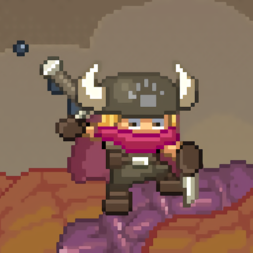

Estadísticas
| Estadistica | Valor |
|---|---|
| Salud Maxima | 3 Corazones |
| Armamento Base | Espada de Hierro |
| Record del Padre | 14 Serpientes Celestiales |
| Objetivo de Slayer | 15 Serpientes Celestiales |
Habilidades
- Clavado de Espada: Habilidad para clavar el arma en los puntos vulnerables de las bestias y aferrarse firmemente mientras se mueven.
- Agarre Extremo: Capacidad para sujetarse de las escamas del monstruo y resistir los violentos intentos de las serpientes por arrojarlo al vacío.
- Desplazamiento Dinámico: Agilidad para correr y saltar a lo largo del cuerpo serpentino mientras este vuela por las nubes.
- Esquive de Proyectiles: Reflejos rápidos para evadir las ráfagas de plasma, espinas y ataques defensivos que brotan de los poros de las criaturas.
Historia
El Legado del Padre
Slayer es el hijo de un legendario guerrero vikingo norteño que dedicó su vida a limpiar los cielos de monstruos titánicos. Su padre ostentaba el glorioso e insuperable récord de haber derribado a 14 colosales serpientes voladoras antes de envejecer y retirarse.
La Gran Cacería en el Cielo
Decidido a demostrar su valía y reclamar el título del verdadero campeón de la familia, el joven Slayer toma la espada de su padre y se lanza a una peligrosa odisea en las alturas. Su misión es dar caza a 15 de las bestias más grandes y complejas del firmamento para superar para siempre el legado familiar.